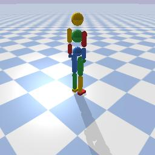
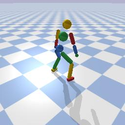
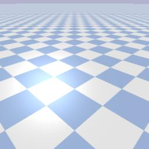
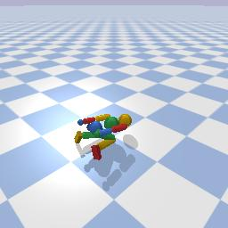
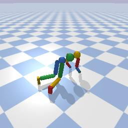
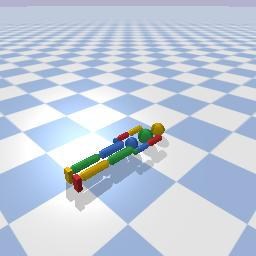
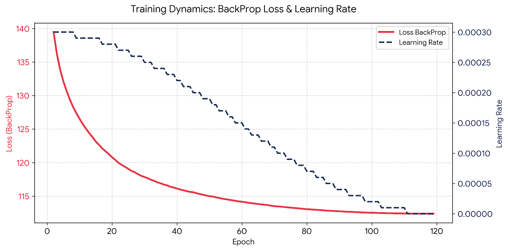
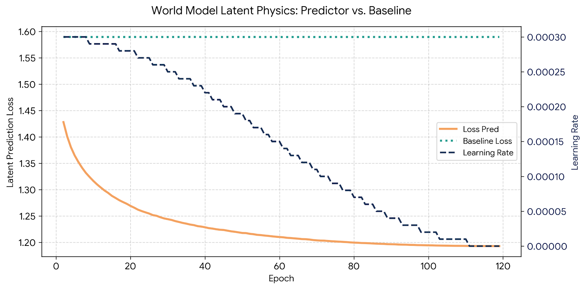

World Model Action Control: Training a Humanoid to Stand in PyBullet Using V-JEPA 2
March 18, 2026
In summer 2025, Meta released a Video World Model, V-JEPA 2. Recently, I used it to build a training and inference pipeline for the humanoid standing task.
Here are the results!
Summary
The idea of the JEPA (Joint-Embedding Predictive Architecture) is to predict missing or future frames of a video in latent space. So there is an encoder and a predictor. Frames of a video are encoded by the model into a "latent space", then subsequent frames (or even the same frames) are transformed via corruption or deletion, and finally the predictor is trained to predict the untransformed frames in latent space. So there is no "decoder". And the "predictor" is not really used at inference time -- it exists to make learned latent representations sensible. So one would typically need to train a custom predictor for the specific use-case. The model is trained in such a way that the latent representations have a notion of "distance" or "energy". Closer L1 distances of two states indicate less "surprise". So smooth frame transitions in a video should have low L1 distance, whereas physically impossible transitions should have high L1 distance.
To connect the V-JEPA Model to my torque-action controlled humanoid, I trained a predictor from scratch. The predictor's job is to take a latent encoding together with an action (in my case a size 28 vector of torques) and predict the consequence of that action as a latent representation. Training the predictor required curating a dataset of prior latents, actions, and posterior latents, and experimenting with different architectures.
To use the predictor to find an ideal sequence of actions to stand, I used a monte carlo technique known as "Cross-Entropy Method" (CEM), where we iteratively sample optimum actions by reducing the search space based on top performing "elites". We start with the latent representation of the lying down pose, and we attempt to reach the standing pose target.
In the final result, the humanoid failed to perform a successful stand in simulation, but there appears to be sensible, intelligent movement in the right direction.
Methodology
The simulation setup and hardware is the same as the RL-Standing Project, outlined in my previous blog post. All work is done on an M1 Mac with 8gb RAM ("MPS" as the "gpu"/"device"), and simulation is running at 480Hz.
To extract videos from PyBullet, I configured a camera module and set the renderer to "p.ER_BULLET_HARDWARE_OPENGL" to capture color, lighting, and shadows. But this only works when the engine is connected to the GUI. To save compute and not render every single step, I call "p.configureDebugVisualizer(p.COV_ENABLE_RENDERING, 0)" (important in the data collection phase).
For this project, I used "facebook/vjepa2-vitl-fpc16-256-ssv2" as the latent representation encoder. The HuggingFace link to the model can be found here . To use this model, I passed inputs of shape (16, 256, 256, 3), and it outputted latents of shape (2048, 1024). Static images were repeated 16 times to get a "video" when necessary. The latent can be interpreted as 2048 tokens of size 1024.
Initial Sanity Check
Before proceeding further, I wanted to ensure that there is indeed a sensible metric in latent space. Do poses more similar to the standing pose actually have a lower L1?
To do this, I created a "pose studio" which allowed me to configure the humanoid robot in various poses, and then I compared the L1 distance of the poses' latent representations to the target standing pose. The camera module I set up captures images of size 256x256. I repeated the frame 16 times to create an artificial video buffer which I passed to the V-JEPA encoder. Below are the results, in order of closest to furthest from the target standing pose as determined by the L1 metric.






For the most part, poses closer to the desired stand pose indeed do have lower L1 distance! However, the one problematic case is the scene with no robot at all, which had lower L1 than everything except the athletic low stand! This is an interesting case, but I decided to press on, as I was satisfied with the ordering of the other poses.
Data Collection for Predictor
Training data needed to be collected to train the action-aware predictor.
We represent each state as a video recording of the application of a single action vector for 160 physics simulation steps. We capture images every 10 steps for a total of 16 frames. Since the simulator runs at 480Hz, this represents a 3Hz action-step. Each "sample" of data consists of a triplet (Z_0, Action, Z_1), where Z_0 is the prior state, the Action is the action we intend to apply, and Z_1 is the resulting state. The goal is to train a predictor to predict Z_1 given Z_0 and Action.
To kick off the data collection process, we spawn the humanoid in the simulator at a random orientation. Then we step the simulation a random number of steps (uniform) between 20 and 150, and then apply an initial random action vector sampled from Uniform(-1, 1). This gets us the initial Z_0. Then we apply another random action to get Z_1. We then iterate for a maximum of 10 such steps to get a chain of (Z_0, Action, Z_1). We truncate the process if the robot every moves outside a 1.2m radius from the origin to keep it within the camera frame (turns out this happens almost every time). I call each of these sequences an "Episode".
I ran the above methodology for 1000 episodes to get a total of 4159 transition triplets. I also recorded videos of the entire episode every 10 episodes. The total dataset size (including the videos) is 52gb. Below are the recorded videos from the entire 360th episode. Note that the final frame of the left hand video is the same as the first frame of the right hand video. And the right hand video clip is the same as the next step's left hand video clip.
Once all the raw video data was collected, I ran the JEPA encoder on all the video buffers to arrive at the final training data set consisting of 4159 triplets (Z_0, Action, Z_1) in latent space. This final dataset is 35gb in total size.
Predictor Training
The predictor model's inputs are Z_0 and Action, and it is trained to output Z_1. The latent states (Z_0, Z_1) have dimension (2048, 1024), representing 2048 "tokens" of size 1024. The action is a vector of size 28.
In the model, we first preprocess the action to encode it as a larger vector of size hidden_dim=512 by passing it through two linear MLP layers with the first one outputting size 128 and final one size 512, with a GELU activation in between and layer norm at the end. We preprocess the input latent Z_0 by first doing a layer norm, and then adding sin/cos positional embeddings (see the "Attention is All You Need" paper). We compress this shape into the hidden_dim=512 by using a linear MLP layer. We then broadcast the action to this compressed latent state by concatenating the encoded action to the beginning and also adding it. We then pass this through a transformer with 4 heads with feed forward dimension of 4*hidden_dim = 2048. We have two layers of this transformer. The output of this transformer is then multiplied by a learnable scaling parameter before being added back to the original Z_0 input. So the transformer is trained to look for the delta (Z_1 - Z_0).
The loss function is a custom L1 function that hones in on the tokens that change the most. We first take the difference of Z_0 and Z_1 (actual), then take the average across the token dimension. This results in 2048 numbers representing the average change of each token. We multiply by 50 and add 1 to get a "diff mask". Then we take the raw L1 of the predicted Z_1 and actual Z_1, multiply by this diff mask and take the mean. So effectively, we have a weighted L1 loss that penalizes error in tokens more when the token actually changes significantly from the prior state.
The scaling parameter was initialized at 0.1. So effectively, in the beginning of training, the model would tend to predict Z_1_pred = Z_0, but the scaling factor would rise as the model became more "confident" in the output of the transformer.
I thought this was a clever training trick, but I am actually dubious that it resulted in a more effective training result. It seems just using the standard L1 loss function and no delta scaling factor resulted in more or less the same final result. But I think the training trajectory of this technique is better -- with the loss starting high and lowering progressively over time.
We use cosine annealing for the learning rate.
Below is the model summary outputted by PyTorch.
| Layer (type:depth-idx) | Output Shape | Param # |
|---|---|---|
| WorldPredictorPro | [2, 2048, 1024] | 1 |
| ├─LayerNorm: 1-1 | [2, 2048, 1024] | 2,048 |
| ├─Linear: 1-2 | [2, 2048, 512] | 524,800 |
| ├─Sequential: 1-3 | [2, 512] | -- |
| │ └─Linear: 2-1 | [2, 128] | 3,712 |
| │ └─GELU: 2-2 | [2, 128] | -- |
| │ └─Linear: 2-3 | [2, 512] | 66,048 |
| │ └─LayerNorm: 2-4 | [2, 512] | 1,024 |
| ├─TransformerEncoder: 1-4 | [2, 2049, 512] | -- |
| │ └─ModuleList: 2-5 | -- | -- |
| │ │ └─TransformerEncoderLayer: 3-1 | [2, 2049, 512] | 3,152,384 |
| │ │ └─TransformerEncoderLayer: 3-2 | [2, 2049, 512] | 3,152,384 |
| ├─Linear: 1-5 | [2, 2048, 1024] | 525,312 |
| Total params: | 7,427,713 |
| Trainable params: | 7,427,713 |
| Non-trainable params: | 0 |
| Total mult-adds (Units.MEGABYTES): | 10.65 |
| Input size (MB): | 16.78 |
| Forward/backward pass size (MB): | 318.90 |
| Params size (MB): | 21.31 |
| Estimated Total Size (MB): | 356.98 |
Below are images summarizing the training result.
First, the loss curve of the actual loss metric used in backpropagation.

Next, the loss curve of the raw L1 between the predicted and actual latent state, together with the baseline L1 between Z_0 and Z_1 across the dataset.

Total training time was ~30 hours on my MacBook. I should have held out a validation set, but I wanted to make full use of my data, and I doubt my model is over-fitting because it has a relatively small number of parameters.
Cross-Entropy Method Action Planning
To determine the ideal sequence of actions, we use a monte-carlo method.
We allow for 6 total actions. For each of the 6 steps, we iterate 5 times, each time narrowing the search space. We start by sampling 1000 actions from Uniform(-1, 1). We then calculate Z_1_pred = Model(Z_0, Action) and Energy_Diff = L1(Z_1_pred, Goal_Latent), and select the 150 elite actions with smallest Energy_Diff. We take Mean and Std Dev of these elites. We sample 1000 new actions from Normal(Elite_Action_Mean, Elite_Action_Std_Dev), and run it through the model to select the next batch of elites. After 5 iterations, the final Action Mean is our chosen "best action" for that step. We run Z_1_next = Model(Z_0, Chosen Action) to predict the next latent state, and Z_1_next becomes Z_0 in the next step.
The first Z_0 is initialized as the lying down pose's latent.
For each of the 6 steps, the goal latents are Knee Tuck, Low Stand, then Standing for the remaining 4. (See the Pose Studio discussion above). In other words, there is a simple "trajectory".
This process took ~4 hours for 10 total trials (10 sets of 6 steps).
Results
Here is the video replay of all 10 trials, recorded through my PyBullet camera module.
Trial 7 seemed to have the most successful attempt. But more on this in the discussion!
Here is a recording of the actual simulation of the 10 trials, from different angles.
Discussion
I think the results are OK (but not great). I still feel optimistic about this approach when compared to alternatives such as model-free reinforcement learning (like my previous blog post).
In the PPO approach, there are infinite configurations to tweak, especially in the reward function, and it is not intuitive which rewards will work and which will fail. And the chances of random movements satisfying the intended rewards are quite low.
In the World Model approach, the main variable is the predictor. Its related dataset, architecture, and training loop need to be refined. But if the encoder is good, ideally this is just a matter of collecting good data, and then throwing compute at the predictor training. Both of these are problems that can be solved in a non-random way. Then, the CEM action planner can select optimal actions in a smart way that doesn't require millions of steps. Of course, the specific algorithm needs to be refined. I like that these World Models inject a high level understanding of motion and physics to the problem of control.
Since this notion of L1 Energy is quite fuzzy, it can be difficult to predict which states have low L1 distance. One blatant example (mentioned above) is the no-robot scene with low L1 distance to standing pose. This would incentivize the robot to flail out of view rather than stand. Furthermore, while it makes sense to work in latent space to prevent pixel-level noise, it is difficult to understand what the latent representations mean. Interpretability is a big issue. I would be interested to learn more about techniques to visualize or understand the latent space.
Training a competent predictor is also a non-trivial task. One of the the main issues I had was with the lack of discerning power of the predictor. In the final trained model, I only had ~25% improvement over predicting an unchanged latent state. I believe my model was too small, but it was already pushing the limits of my laptop. This shows transformer-based models require lots of compute.
Having good training data that covers the possible space of states and actions is also a challenge. I sampled from a uniform distribution. Looking back, this may have been too "sparse", and I should have also sampled some data from a normal distribution. Furthermore, I think it would be good to deliberately "zero-out" some or all of the actions so that we isolate certain joint-actions. That might give the predictor a better idea of how momentum, gravity, and specific joints affect the latent state. I actually wrote a module to augment the training data in this fashion, but unfortunately I ran out of disk space.
Another issue was the single camera perspective. I think you might get better results if you incorporate multiple camera views to triangulate on the true robot state and actions. This would require altering the training data and inference pipe significantly.
Conclusion
My main takeaway is that Video World Models show promise in robotics applications, but for now they should probably be limited to low-DOF applications in controlled environments. And they probably need to be combined with classical control-theory systems or standard RL algorithms for real world use.
But I like the idea of the "energy" based system, and I think this technology has tremendous potential. It's essentially using deep learning to develop some notion of "common sense" about the world. And you limit the feasible actions or optimize the actions by minimizing the energy, which at some level is what intelligent organisms do. World Models allow for such progress in a more "concerted" or "less random" way than pure RL.
Gathering data and training the Predictor are highly challenging tasks. Perhaps if there were some way to get an "out of the box" predictor that merely needs to be adapted to specific action-domains (eg. transfer learning), much more mileage can be obtained from these Video World Models.
← Back to Blog